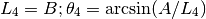

conecalc – Cone Calculator¶
From the introduction:
This program computes pattern sheet size and layout for any size cone and/or the cone and the pattern dimensions to fit any size pattern sheet.
Dimensions can be any unit of measure as long as all dimensions are entered in the same units; x and y dimensions are measured from the lower left corner of the pattern sheet.
There are three use cases:
- To compute cone pattern layout: Given base diameter and cone height, compute pattern sheet size and offsets for center.
- To compute cone size to fit a known pattern sheet size: Given size of the sheet, compute five aterantive cone layouts on the sheet.
- To compute truncated cone pattern layout: given large and small diameters and height between ends, compute the pattern layout.
Analysis¶
Cone pattern layout¶
Lines 1110 to 1310.
Input is base diameter, D and height, H of desired cone.
Calculations:
1160 R=D/2
1170 L=SQR(R^2+H^2)
1180 THETA=PI*D/L :DEG=THETA*180/PI :PRINT
1190 IF THETA=>PI THEN B=2*L:A=L+L*SIN((THETA-PI)/2):X=B/2:Y=A-B/2:GOTO 1220
1200 IF THETA=>PI/2 THEN A=L:B=L+L*SIN(THETA-PI/2):X=B-A:Y=0:GOTO 1220
1210 B=L:A=L*SIN(THETA) :X=0 :Y=O
1220 PRINT " CONE PATTERN "
Explanation...
Quirk: Y=O will happen to act like Y=0 if variable O is undefined.
Sample Output
B
┌─────────┐
y│ │A
││ │
└─────────┘
────x
ENTER: cone base diameter...............D=? 8
ENTER: cone height......................H=? 4
CONE PATTERN
Cone base dia ............... 8.000
Cone height ................. 4.000
Base circumference........... 25.133
Arc angle ................... 254.558°
Arc radius .................. 5.657
Arc center coordinates... X= 5.657
Y= 3.426
Pattern sheet ........... (A) 9.083 x (B) 11.314
Cone size to fit a sheet¶
Lines 430-1040.
Input is small dimension, A and large dimension, B of available sheet.
Calculations:
510 L1=B/2:X=A/L1-1:GOSUB 1060:THETA1=PI+2*ALPHA:ANG1=THETA1*180/PI
520 C1=L1*THETA1 :D1=C1/PI:R1=D1/2:H1=SQR(L1^2-R1^2)
530 :REM'
540 L2=A:X=B/2/L2:GOSUB 1060:THETA2=2*ALPHA:ANG2=THETA2*180/PI
550 C2=L2*THETA2:D2=C2/PI:R2=D2/2:H2=SQR(L2^2-R2^2)
560 :REM'
570 L3=A:X=B/L3-1:GOSUB 1060:THETA3=ALPHA+PI/2:ANG3=THETA3*180/PI
580 C3=L3*THETA3:D3=C3/PI:R3=D3/2:H3=SQR(L3^2-R3^2)
590 :REM'
600 L4=B:X=A/L4:GOSUB 1060:THETA4=ALPHA:ANG4=THETA4*180/PI
610 C4=L4*THETA4:D4=C4/PI:R4=D4/2:H4=SQR(L4^2-R4^2)
620 :REM'
630 L5=B:X=A/2/L5:GOSUB 1060:THETA5=2*ALPHA:ANG5=THETA5*180/PI
640 C5=L5*THETA5:D5=C5/PI:R5=D5/2:H5=SQR(L5^2-R5^2)
Line 1060 is essentially , using a trig identity.
 .
.
Explanation...
There are at most five orientations. If , then the first three can’t be used, only #4 and #5.

In all cases, the Circumference, Diameter, Radius and Height are
calculated from  and
and  .
.

Sample Output
Pattern sheet: (A) ###.## in. x (B) ###.## in.
Type Height Base Diameter Base Circum Radius Arc
1 H D C L theta
2
3
4
5
Type Location of Arc Center
1 X = B/2; Y = A-B/2
2 X = B/2; Y = 0
3 X = B-A; Y = 0
4 X = 0; Y = 0
5 X = 0; Y = A/2
B
┌─────────┐
y│ │A
││ │
└─────────┘
────x
Note that types 1, 2, and 3 do not apply when B>2A
Truncated cone pattern¶
Lines 1560-1950.
Input is Diameter at the large end, D1T, small end D1B and the height, H1.
Calculations:
1730 RT=D1B/2:RB=D1T/2 :H=H1 :GOSUB 2020
1740 TOP=A:BOT=0
1750 IF DEG>180 THEN Y=A-L
1760 IF DEG<180 THEN Y=L-A
1770 IF D1T>D1B THEN LE=D1T:E=D1B :ELSE LE=D1B:SE=D1T
Line 2020:
2020 :REM'.....calculate sector pattern
2030 HX=RB*H/(RT-RB):L=SQR(RT^2+(H+HX)^2):LX=RB*L/RT
2040 THETA=2*PI*RT/L:DEG=THETA*180/PI:PRINT
2050 IF THETA=>PI THEN B=2*L:A=L+L*SIN((THETA-PI)/2):X=B/2:Y=A-B/2:GOTO 2070
2060 B=2*L*SIN(THETA/2):A=L-LX*COS(THETA/2):X=B/2:Y=0
2070 RETURN
Explanation...

Sample Output:
TRUNCATED CONE PATTERN
Diameter at large end............ 4.000
Diameter at small end............ 2.000
Length between ends.............. 2.000
Outer arc radius................. 4.472
Inner arc radius................. 2.236
Arc angle........................ 160.997°
Minimum sheet size............(B) 8.822 x (A) 4.103
Location of arc centre.........x= 4.411 y= 0.369 below bottom of sheet
Location of top of sheet.......y= 4.103
Location of bottom of sheet....y= 0.000
B
┌─────────┐
y│ │A
││ │
└─────────┘
────x